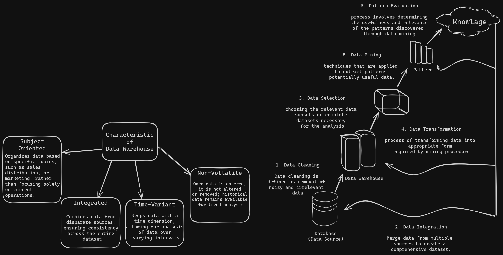

DMBI
DWH characteristics
A data warehouse is a centralized repository for storing and managing large volumes of data from diverse sources, primarily focused on supporting analytical tasks and decision-making.

OLAP v/s OLTP
| Feature | OLAP | OLTP |
|---|---|---|
| Full Form | Online Analytical Processing | Online Transaction Processing |
| Characterstics | Operational Processing | Information Processing |
| Orientation | Transaction | Analysis |
| User | Knowledgeable People | Normal People |
| Function | Decision Support | Day to Day Operation |
| Data | Current | Historical/Summarized |
| Access | Only Read | Read & Write |
| Focus | Information out | Data in |
| Accessed | 100 | Millions |
| No. of User | 1000 | 100 |
| Data Size | TB | GB |
| Query Types | Complex queries | Simple, standardized queries |
| Data Structure | Multidimensional | Relational |
Star v/s Snowflake schema
| Star Schema | Snowflake Schema |
|---|---|
| Top-down model | Bottom-up model |
| Contained fact tables and dimension tables | Fact table, Dimension tables or Sub-dimension table |
| Use more space | Less space |
| Takes less for Query execution | Takes more time for query execution |
| Not used normalization | Uses Normalization & Denationalization |
| Design is very simple | Complex |
| Query complexity low | High |
| Easy to understand | Diffecult |
| Less no. of foreign keys | More no. of foreign keys |
| High data redundancy | Low |
OLAP Operations
OLAP stands for _Online Analytical Processing_ Server. It is a software technology that allows users to analyze information from multiple database systems at the same time.

- Drill down: In drill-down operation, the less detailed data is converted into highly detailed data.
- Example: In the cube given in overview section, the drill down operation is performed by moving down in the concept hierarchy of _Time_ dimension (Quarter -> Month).

Roll up: It is just opposite of the drill-down operation.
- Example: In the cube given in the overview section, the roll-up operation is performed by climbing up in the concept hierarchy of _Location_ dimension (City -> Country).

Dice: It selects a sub-cube from the OLAP cube by selecting two or more dimensions.
- Example: a sub-cube is selected by selecting following dimensions with criteria:
- Location = “Delhi” or “Kolkata”
- Time = “Q1” or “Q2”
- Item = “Car” or “Bus”

- Example: a sub-cube is selected by selecting following dimensions with criteria:
Slice: It selects a single dimension from the OLAP cube which results in a new sub-cube creation.
- Example: Slice is performed on the dimension Time = “Q1”

Pivot: It is also known as _rotation_ operation as it rotates the current view to get a new view of the representation.
- Example: In the sub-cube obtained after the slice operation, performing pivot operation gives a new view of it.

KDD
KDD (Knowledge Discovery in Databases) is a process that involves the extraction of useful, previously unknown, and potentially valuable information from large datasets.

Numerical : Smoothing by bin Mean, Median & Boundary
Video: Data Smoothing Methods | Equal Frequency Bin | Bin Mean | Bin Boundary Data Mining by Mahesh Huddar
Definition:
- The binning method can be used for soothing the data.
- Mostly data is full of noise.
- Data smoothing is a data pre-processing technique used to remove the noise from the dataset. Example:
- Given Data: 8, 16, 9, 15, 21, 21, 24, 30, 26, 27, 30, 34
- Sort the data if it's unsorted.
- After Sorted: 8, 9, 15, 16, 21, 21, 24, 26, 27, 30, 30, 34
- Now we can apply data smoothing techniques.
- Total Number of data: 12
Assumed bin size: 4
Equal Frequency
Sorted data: 8, 9, 15, 16, 21, 21, 24, 26, 27, 30, 30, 34
Bins: Total Number of data / Assumed bin = 12/4
- Bin 1: 8, 9, 15, 16
- Bin 2: 21, 21, 24, 26
- Bin 3: 27, 30, 30, 34
Bin Means
- Sorted data: 8, 9, 15, 16, 21, 21, 24, 26, 27, 30, 30, 34
- Mean of Bin 1: (8 + 9 + 15 + 16 / 4) = 12
- Bin 1: 12, 12, 21, 12
- Mean of Bin 2: (21 + 21 + 24 + 26 / 4) = 23
- Bin 2: 23, 23, 23, 23
- Mean of Bin 3: (27 + 30 + 30 + 24 / 4) = 30
- Bin 3: 30, 30, 30, 30
Bin Boundary
- Sorted data: 8, 9, 15, 16, 21, 21, 24, 26, 27, 30, 30, 34
- Before bin Boundary: Bin 1: 8, 9, 15, 16
- After bin Boundary: Bin 1: 8, 8, 16, 16
- Before bin Boundary: Bin 2: 21, 21, 24, 26
- After bin Boundary: Bin 2: 21, 21, 26, 26
- Before bin Boundary: Bin 3: 27, 30, 30, 34
- After bin Boundary: Bin 3: 27, 27, 27, 34
Numerical : Normalization (min-max, z-score)
Videos:
- Normalization in Data Transformation | Min-Max & Z-score Techniques with example
- min-max normalization Z Score Normalization Data Mining Machine Learning Dr. Mahesh Huddar
Min-Max
- Data: 1000, 2000, 3000, 5000, 9000
- Min-Max formula: $$V = \frac{x-min}{max-min}$$
- Min: 1000
- Max: 9000
| Data($V$) | Normalization | Normalized Data ($v$) |
|---|---|---|
| 1000 | $\frac{10000-1000}{9000-1000}$ | 0 |
| 2000 | $\frac{20000-1000}{9000-1000}$ | 0.125 |
| 3000 | $\frac{30000-1000}{9000-1000}$ | 0.25 |
| 5000 | $\frac{50000-1000}{9000-1000}$ | 0.5 |
| 9000 | $\frac{90000-1000}{9000-1000}$ | 1 |
Z-Score
- Data: 1000, 2000, 3000, 5000, 9000
- Z-Score Formula:
$$z=\frac{x-\mu}{\sigma}$$
- Mean: $\mu$ =
$$\frac{1000 + 2000 + 3000 + 5000 + 9000}{5}= 4000$$
- Standard Deviation: $\sigma$ =
$$\sqrt{\frac{\sum{(x_i-\mu)^2}}{n-1}}$$ $$=\sqrt{\frac{(1000-4000)^2+(2000-4000)^2+(3000-4000)^2+(5000-4000)^2+(9000-4000)^2}{5-1}}$$ $$=2489.97$$
- Answer:
| Data($V$) | Normalization | Normalized Data ($v$) |
|---|---|---|
| 1000 | $\frac{10000-4000}{2489.97}$ | -1.204 |
| 2000 | $\frac{20000-4000}{2489.97}$ | -0.803 |
| 3000 | $\frac{30000-4000}{2489.97}$ | -0.4016 |
| 5000 | $\frac{50000-4000}{2489.97}$ | -0.4016 |
| 9000 | $\frac{90000-4000}{2489.97}$ | 2.0088 |
Numerical : Mean, Median, Mode, standard deviation (5 Points)
- Data: 1000, 2000, 3000, 5000, 9000
- Mean:
$$\frac{1000 + 2000 + 3000 + 5000 + 9000}{5}= 4000$$
- Median
- The median is middle value of dataset.
- First data get sorted $$\frac{n+1}{2} = \frac{5+1}{2}=3 // n = \text{number of values}$$ $$ \text{Data mean is: 3000}$$
- Standard Deviation:
$$\sqrt{\frac{\sum{(x_i-\mu)^2}}{n-1}}$$ $$=\sqrt{\frac{(1000-4000)^2+(2000-4000)^2+(3000-4000)^2+(5000-4000)^2+(9000-4000)^2}{5-1}}$$ $$=2489.97$$
Summary Box Plot
Information gain, entropy, gini index
Bagging & Boosting

Bagging
- Bootstrap Aggregating is the full form of Bagging.
- Bagging is an ensemble method that generates additional data for training from the dataset.
- Bagging helps to reduce the variance error and over-fitting issues in a model.
- Bagging is a parallel method that fits different, considered learners independently from each other, making it possible to train them simultaneously.
- Bagging generates multiple classifiers that are combined using average or majority voting.
- Bagging is suitable for unstable classifiers with high variance.
- Bagging is more robust and resilient, making it particularly suitable for challenging and dynamic real-world scenarios.
Boosting:
- Boosting is an ensemble method that provides sequential learning of the predictors.
- Boosting is a homogeneous weak learners’ model but works differently from Bagging.
- Boosting aims to reduce bias and improve accuracy.
- Boosting starts by classifying the original data set and giving equal weights to each observation.
- If classes are predicted incorrectly using the first learner, then it gives higher weight to the misclassified observation.
- Boosting is an iterative process that continues to add classifier learners until a limit is reached in the number of models or accuracy.
- Boosting has shown better predictive accuracy than Bagging, but it also tends to over-fit the training data.
- Boosting is suitable for stable and simple classifiers with high bias.
Error Rate, Precision, Recall, Holdout, Random Sampling, Cross validation, Bootstrap
- Error Rate: 
- The percentage of errors made over the whole set of instances used for testing.
- Precision:
- It measures how many of the predicted positive instances are actually positive.
- A high precision score indicates that the model is correctly identifying positive instances and minimizing false positives.
- Recall:
- In the context of machine learning and data analysis, refers to the ratio of true positives (items correctly classified as positive) to the sum of true positives and false negatives (items incorrectly classified as negative).
- Recall is a measure of the completeness of a classification model—how well it finds all the relevant instances within the dataset.
- Holdout: 
- It involves splitting the available dataset into two separate sets: a training set and a testing set.
- The training set is used to train the model, while the testing set is used to evaluate its performance.
- The holdout method is a simple and commonly used technique for estimating the performance of a model before it is deployed to make predictions on new data.
- Random Sampling: 
- A method of selecting a subset of data from a larger dataset by randomly selecting instances from the dataset.
- Cross-validation:
- A technique used to evaluate the performance of a machine learning model and avoid over-fitting.
- It involves dividing the dataset into two parts: one for training and the other for testing.
- The model is trained on the training set and validated on the test set, and this process is repeated multiple times.
- Bootstrap: 
- A method of estimating the accuracy of a model by repeatedly sampling the dataset with replacement to create new datasets of the same size as the original dataset.
- The model is trained on each of these new datasets, and the resulting accuracy estimates are averaged to produce a single estimate of the test error.
Numerical : Naive Bayes
Linear Regression
